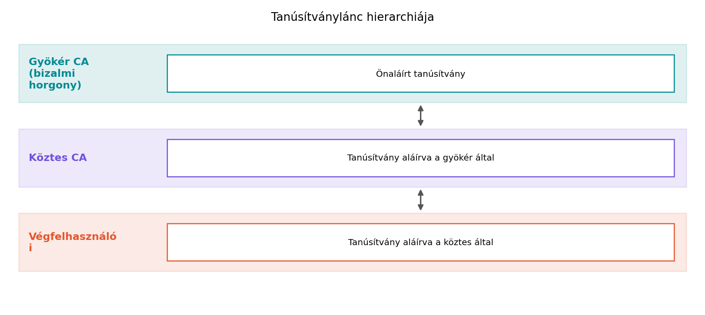

Amikor a böngésző megnyit egy https://bank.example.com
oldalt, a szerver elküldi a tanúsítványát, hogy a kliens ellenőrizhesse
a hitelességét. A tanúsítvány egy aláírt állítás arról, hogy a
bank.example.com nyilvános kulcsa valóban a bankhoz
tartozik, de ki írta alá ezt az állítást? A böngésző nem ismerhet
közvetlenül minden weboldal hitelesítésszolgáltatóját (CA-ját). A
megoldás a bizalmi lánc: a hitelesítésszolgáltatók hierarchiába
szerveződnek, és a kliens csak a hierarchia tetején álló gyökér CA-kat
ismeri. Az Tanúsítványok és az X.509
alfejezetben megismertük a tanúsítvány formátumát; most azt vizsgáljuk,
hogyan épül fel és hogyan érvényesítjük a belőlük álló láncot, valamint
hogyan kezeljük a már nem megbízható tanúsítványokat.
A lánc nélkül minden weboldal külön megállapodást igényelne a böngészővel, ami gyakorlatilag lehetetlen. A hierarchia teszi lehetővé, hogy néhány száz gyökér CA segítségével milliónyi weboldalt hitelesítsünk. Ugyanakkor a lánc érvényesítése összetett feladat, és a hibák súlyos biztonsági következményekkel járnak.
A tanúsítványlánc olyan tanúsítványok sorozata, amelyben minden elem aláírja a következőt, és a lánc vége egy önaláírt gyökértanúsítvány, amelyet a kliens kifejezetten megbízhatónak fogad el.
Definíció. Bizalmi horgony (trust anchor) az a kliens által kifejezetten megbízhatónak elfogadott, gyakran önaláírt tanúsítvány vagy nyilvános kulcs, amely a tanúsítványlánc érvényesítésének alapját képezi. A böngészőkben ezt a gyökértár (root store) tartalmazza.
Definíció. Tanúsítványlánc (certificate chain) olyan tanúsítványsorozat, ahol egy bizalmi horgony (jellemzően önaláírt gyökér), minden esetén alanya (subject) megegyezik kibocsátójával (issuer), és nyilvános kulcsa ellenőrzi aláírását. A a cél, általában végfelhasználói tanúsítvány, a köztes elemek pedig a CA-tanúsítványok.
A hierarchia tipikusan három szintű: a gyökér CA, egy vagy több köztes CA, és a végfelhasználói tanúsítvány. A gyökér CA kulcsát offline, hardveres biztonsági modulban tárolják, hogy kompromittálódása gyakorlatilag kizárt legyen. A köztes CA-k végzik a napi kiadási feladatokat, így ha egy köztes kulcs kiszivárog, a gyökeret nem kell visszavonni, csak az adott köztes CA-t.

Az ábra a háromszintű láncot mutatja: a gyökér CA aláírja a köztes CA tanúsítványát, a köztes CA pedig a webszerver tanúsítványát. A böngésző a gyökértárból ismeri a gyökér CA nyilvános kulcsát, így az aláírásokat visszafelé haladva ellenőrizheti.
A böngészőnek a szervertől kapott tanúsítvány(ok)ból fel kell építenie a láncot, majd lépésről lépésre érvényesítenie kell azt. A folyamatot az RFC 5280 szabvány rögzíti.
Recept. Útvonal-érvényesítési ellenőrzőlista (a teljes lánc minden elemére, a gyökértől a végfelhasználói tanúsítványig):
Basic Constraints: CA=TRUE (és a
Key Usage-ben keyCertSign) legyen, a
pathLenConstraint által megengedett köztes szintszámot a
lánc ne lépje túl.Algoritmus. Láncépítés (egyszerűsített változat):
bemenet: cél_tanúsítvány, köztes_tanúsítványok halmaza, gyökértár
lánc = [cél_tanúsítvány]
amíg a lánc utolsó eleme nem eleme a gyökértárnak:
keress olyan tanúsítványt a köztes_tanúsítványok ∪ gyökértár halmazban,
amelynek alanya megegyezik a lánc utolsó elemének kibocsátójával
ha nincs ilyen, akkor HIBA
ellenőrizd a lánc utolsó elemének aláírását a talált jelölt nyilvános kulcsával
ha az aláírás érvénytelen, akkor HIBA
fűzd hozzá a lánchoz
érvényesítsd a láncot a fenti ellenőrzőlista szerintA láncépítés során a kliensnek gyakran több lehetséges útvonala is van, és a legrövidebb, legmegbízhatóbb utat kell választania. A gyakorlatban a szerver a TLS-kézfogás során elküldi a végfelhasználói tanúsítványt és a köztes tanúsítványokat is, így a böngészőnek csak a gyökérhez kell kapcsolnia.
Tegyük fel, hogy a böngésző a bank.example.com oldalt
keresi fel, és a szervertől a következő tanúsítványokat kapja:
bank.example.com szerver tanúsítványa, amelyet a
Köztes CA írt alá.Köztes CA tanúsítványa, amelyet a Gyökér CA
írt alá.A böngésző gyökértárában szerepel a Gyökér CA önaláírt
tanúsítványa,
.
Lépések:
Köztes CA. Megkeressük a kapott láncban a
tanúsítványt.Gyökér CA, és
aláírása érvényes a gyökértárból vett
kulccsal.keyCertSign bit be
van állítva).nameConstraints kiterjesztést, például csak a
example.com domain alatti neveket engedélyezi, akkor
megvizsgáljuk
subjectAltName mezőjét. Mivel a bank.example.com megfelel,
a lánc továbbhalad.Köztes CA
CRL-jében keressük
sorozatszámát; ha nincs benne, elfogadjuk.Az alábbi ábra a példát valódi tanúsítványokkal játssza le: két láncépítő lépés (a kibocsátót a köztes tanúsítványok és a gyökértár együttesében keressük), majd hét ellenőrzés, köztük a köztes CA jogosultságáé (Basic Constraints: CA=TRUE). Az interaktív változatban hibás láncok is választhatók (lejárt, névkorlátot sértő, CA=FALSE kibocsátójú, visszavont, hamis aláírású), és látszik, melyik lépésnél bukik el az érvényesítés.
Ha bármelyik lépés sikertelen, a kapcsolatot el kell utasítani. A gyakorlatban a böngészők egy hibaüzenetet jelenítenek meg, és a felhasználó csak figyelmeztetéssel léphet tovább.
A névkorlátozás (name constraints) X.509 kiterjesztés lehetővé teszi,
hogy egy CA-t csak bizonyos névtartományokra korlátozzunk. Például egy
vállalati köztes CA tanúsítványában a nameConstraints
permitted: DNS:example.com bejegyzés az
example.com-ot és aldomainjeit engedi, más domainekre a
kliens nem fogad el tőle tanúsítványt.
Tétel (informális). A névkorlátozás csökkenti a köztes CA kompromittálódásának kárát: ha egy támadó megszerzi a köztes CA kulcsát, akkor is csak a korlátozás által megengedett tartományokra tud hamis tanúsítványt kiállítani.
A névkorlátozás a DNS-nevekre, e-mail-címekre, IP-címekre és más névterekre alkalmazható. Az érvényesítés során a kliensnek ellenőriznie kell, hogy a lánc alacsonyabb szintjén lévő tanúsítványok alanyai beleesnek-e a korlátozásba. Ha nem, a lánc érvénytelen. A gyakorlatban a nyilvános Web PKI-ben ritkán használják, de a zárt vállalati PKI-kben fontos védelmi eszköz.
A tanúsítványok érvénytelenné válhatnak még a lejárati idő előtt, például ha a magánkulcs kiszivárog, vagy a tulajdonos már nem jogosult a névre. Ilyenkor a CA-nak vissza kell vonnia a tanúsítványt. A visszavonási állapot ellenőrzésére három fő mechanizmus létezik.
CRL (Certificate Revocation List): a CA által rendszeresen kiadott, aláírt lista a visszavont tanúsítványok sorozatszámáról és a visszavonás idejéről. A kliens letölti a CRL-t, és ellenőrzi, hogy a tanúsítvány szerepel-e benne. Hátránya, hogy a lista nagy lehet, és a frissítési késleltetés miatt egy frissen visszavont tanúsítvány még órákig érvényesnek tűnhet.
OCSP (Online Certificate Status Protocol): a kliens egy adott tanúsítvány állapotát kérdezi le egy OCSP-respondertől. A válasz egy aláírt üzenet, amely megmondja, hogy a tanúsítvány „jó”, „visszavont” vagy „ismeretlen”. Ez gyorsabb és pontosabb, mint a CRL, de minden lekérdezés felfedi a szerver nevét az OCSP-responder előtt, és a szolgáltatás elérhetetlensége problémát okoz.
OCSP stapling: a TLS-kézfogás során a szerver maga küldi el a friss OCSP-választ a tanúsítványával együtt. A választ a CA aláírta, így a kliens ellenőrizheti anélkül, hogy közvetlenül az OCSP-responderhez fordulna. Ez csökkenti a késleltetést és a magánszféra-szivárgást, de a szervernek rendszeresen le kell töltenie a staplinghez szükséges választ.
A „soft-fail” probléma. Sok korai implementáció, ha nem tudta elérni a CRL-t vagy az OCSP-respondert, nem utasította el a tanúsítványt, hanem „puha hibával” (soft-fail) elfogadta. Egy támadó így egyszerűen blokkolhatta a visszavonás-ellenőrzést, és a visszavont tanúsítvány érvényesnek tűnt. A modern rendszerekben emiatt a hard-fail (sikertelen ellenőrzés esetén elutasítás), vagy az OCSP stapling a tanúsítványban kikényszerített Must-Staple jelzéssel együtt az ajánlott; Must-Staple nélkül a támadó egyszerűen elhagyja a staple-t. A böngészők ma főként előre letöltött, tömörített visszavonási listákat (pl. CRLSets, CRLite) használnak (ellenőrzési igény: az aktuális böngésző- és CA-gyakorlat).
A visszavonási infrastruktúra terhelésének csökkentésére egyre elterjedtebbek a rövid élettartamú tanúsítványok. A Let’s Encrypt például 90 napos tanúsítványokat ad, de vannak néhány órás vagy akár perces élettartamú belső rendszerek is. Ha egy tanúsítvány hamarosan lejár, a visszavonási lista mérete kisebb, mert a lejárt tanúsítványokat nem kell visszavonni. A kompromittálódás ablaka is rövidebb. Ugyanakkor a rövid élettartam megköveteli az automatikus megújítást, ami újabb támadási felületet jelenthet.
A kódaláíró PKI célja annak bizonyítása, hogy egy letöltött program valóban a megnevezett fejlesztőtől származik, és nem módosították. A fejlesztő aláírja a kódot, a tanúsítványláncot pedig a fenti módon érvényesítik. Egy fontos különbség a webes PKI-hoz képest: ha egy aláíró tanúsítványt visszavonnak, a korábban aláírt kódok érvényessége megkérdőjelezhető. Ezt oldja meg az időbélyegzés: egy megbízható időbélyegző szolgáltató (TSA) aláírást ad arról, hogy a kód aláírása egy adott időpont előtt történt. Ha a tanúsítványt később visszavonják, az időbélyeg bizonyítja, hogy az aláírás a visszavonás előtti időben keletkezett, így a kód továbbra is hiteles maradhat.
A tanúsítványláncok gyengeségeit több valós támadás is kihasználta. A Születésnapi támadás, MD5- és SHA-1-ütközések, hash-alkalmazások alfejezetben tanult választott előtagú MD5-ütközést használták 2008-ban (ellenőrizendő évszám) egy hamis CA-tanúsítvány előállítására: a támadók egy legitim CA-tól egy közönséges webszerver-tanúsítványt kérettek, amelynek aláírandó része (tbsCertificate) MD5-ben ütközött egy általuk előkészített CA-tanúsítvány aláírandó részével; mivel a CA a lenyomatot írta alá, ez az aláírás a hamis CA-tanúsítványon is érvényes volt, így a böngészők a hamis CA-t elfogadták. Emiatt az MD5-öt és később a SHA-1-et is kitiltották a tanúsítványokból. A Flame kártevő hasonló MD5-ütközést használt arra, hogy a Microsoft frissítési szolgáltatásának aláírását hamisítsa, így a kártevő hivatalos frissítésnek tűnt.
A mai böngészők (Chrome, Firefox, Safari) a gyökértáron kívül OCSP staplinget, CRL-seteket és a Certificate Transparency naplókat is használnak, utóbbit a Certificate Transparency és a Web PKI kudarcai alfejezet tárgyalja. A kódaláírásban a Microsoft Authenticode, az Apple notarization és a Java JAR-aláírás mind időbélyegzést használ.
Továbbvitt eredmény. A láncérvényesítés lépései és a visszavonási mechanizmusok ismerete alapvető a TLS a gyakorlatban: konfiguráció, vizsgálat és mTLS és a Protokollszintű hibák: visszaminősítés, bemenetellenőrzés, kontextuskötés alfejezetekben, ahol a TLS- és protokollhibák elemzéséhez használjuk. A visszavonás gyakorlati problémáit a Certificate Transparency és a Web PKI kudarcai alfejezet folytatja.
Az alábbi rövid példa a cryptography csomaggal mutatja
be egy lánc aláírás-ellenőrzését:
# OKTATÁSI CÉLRA – NEM ÉLES HASZNÁLATRA
from cryptography import x509
from cryptography.exceptions import InvalidSignature
# Tegyük fel, hogy a fájlok PEM formátumúak (csak tesztvektorok)
server_cert = x509.load_pem_x509_certificate(open("server.pem", "rb").read())
intermediate_cert = x509.load_pem_x509_certificate(open("intermediate.pem", "rb").read())
root_cert = x509.load_pem_x509_certificate(open("root.pem", "rb").read())
# Aláírás-ellenőrzés a láncban: sikeres ellenőrzésnél nincs visszatérési érték,
# hibánál kivétel keletkezik
try:
server_cert.verify_directly_issued_by(intermediate_cert)
intermediate_cert.verify_directly_issued_by(root_cert)
print("Lánc aláírásai rendben")
except (ValueError, TypeError, InvalidSignature) as e:
print("Hibás lánc:", e)Várható kimenet (ha a lánc helyesen van felépítve):
Lánc aláírásai rendbenA verify_directly_issued_by sikeres ellenőrzésnél nem ad
vissza értéket (None), hibánál kivételt dob
(ValueError, TypeError,
InvalidSignature); a visszatérési értékét ezért nem szabad
feltételben használni. A metódus ellenőrzi az aláírást, de a lejáratot,
a névkorlátozást és a visszavonást külön kell vizsgálni.
Basic Constraints kiterjesztést,
bármely levéltanúsítvány tulajdonosa hamis tanúsítványt adhatna ki.
Helyes: minden kibocsátó tanúsítványban CA=TRUE és
keyCertSign megkövetelése.1. feladat (A) Sorold fel a tanúsítványlánc érvényesítésének legalább öt lépését, és magyarázd el, miért szükséges mindegyik.
2. feladat (A) Egy tanúsítványláncban a gyökér CA
R, a köztes CA I, a szerver S.
Milyen aláírásokat kell ellenőrizni, és milyen sorrendben? Írd fel az
ellenőrzési egyenleteket a
jelöléssel.
3. feladat (B) Egy köztes CA tanúsítványában a
névkorlátozás a example.com domainre vonatkozik. Milyen
tanúsítványokat utasít el a láncot érvényesítő kliens, és miért? Adj
példát egy elfogadott és egy elutasított kérelemre.
4. feladat (B) Tegyük fel, hogy egy böngésző nem tudja elérni az OCSP-választ, és soft-fail módban elfogadja a tanúsítványt. Írj egy támadási forgatókönyvet, és mondd meg, hogyan lehetne a támadást megakadályozni.
5. feladat (C) Bizonyítsd be (informálisan), hogy ha a gyökér CA kulcsát kompromittálják, az egész hierarchia biztonsága összeomlik, míg ha egy köztes CA kulcsát kompromittálják, a kár korlátozható névkorlátozással és a köztes CA visszavonásával. Ez a feladat előkészíti a TLS a gyakorlatban: konfiguráció, vizsgálat és mTLS és a Protokollszintű hibák: visszaminősítés, bemenetellenőrzés, kontextuskötés alfejezetekben a láncérvényesítés fontosságát.
6. feladat (D) Tervezz egy rövid élettartamú tanúsítványokat használó rendszert egy vállalati belső szolgáltatáshoz. Milyen előnyei és hátrányai vannak? Hogyan csökkenti a visszavonási lista méretét?
Önellenőrzés – válaszok
1. feladat (A) megoldása A lépések: aláírás-ellenőrzés, lejárati idő ellenőrzése, névkorlátozás, kulcshasználat, visszavonási állapot, bizalmi horgony elérése. Mindegyik azért fontos, mert egy feltétel megsértése esetén a tanúsítvány nem igazolja a név és a nyilvános kulcs kapcsolatát, vagy a kulcs már nem megbízható.
2. feladat (A) megoldása Ellenőrizni kell: és , ahol a köztes CA nyilvános kulcsa, a gyökéré, és a megfelelő aláírandó adatrészek, és az aláírások. A sorrend tetszőleges, de a gyakorlatban alulról felfelé haladunk.
3. feladat (B) megoldása A kliens elfogadja a
www.example.com, api.example.com (és
example.com) nevű tanúsítványt, de elutasítja a
www.example.org vagy example.com.evil.net
nevűt – akkor is, ha a köztes CA (például kompromittált kulccsal)
kiállította.
4. feladat (B) megoldása Támadási forgatókönyv: a támadó egy visszavont tanúsítványt használ, és blokkolja az OCSP-kérést (pl. hálózati tűzfallal). A böngésző soft-fail miatt elfogadja a tanúsítványt. Védekezés: hard-fail (elutasítás, ha az OCSP nem érhető el), OCSP stapling Must-Staple-lel, rövid élettartamú tanúsítványok, vagy CRL-setek használata.
5. feladat (C) megoldása Ha a gyökér CA kulcsát kompromittálják, a támadó tetszőleges köztes CA-t és végfelhasználói tanúsítványt írhat alá, így a gyökértár minden alá tartozó tanúsítvány hamisítható. A teljes hierarchia megbízhatatlanná válik; a gyökeret vissza kell vonni, és minden klienst frissíteni kell. Ha egy köztes CA kulcsát kompromittálják, a támadó csak a köztes CA által lefedett tartományban tud hamis tanúsítványt kiállítani. Névkorlátozás esetén a kár tovább szűkül. A köztes CA visszavonásával a hamis tanúsítványok érvényteleníthetők, és a gyökér CA megmaradhat.
6. feladat (D) megoldása Rövid élettartamú tanúsítványok: pl. 24 órás élettartam. Előnyök: a kompromittálódási ablak kicsi, a CRL-be csak a visszavont, még le nem járt tanúsítványokat kell felvenni, így a CRL mérete kicsi marad, és az OCSP-terhelés csökken. Hátrányok: automatikus megújító rendszer kell, amelynek biztonsága kritikus; ha a megújítás leáll, a szolgáltatás elérhetetlenné válik. A visszavonási lista méretének csökkenése: mivel a tanúsítványok hamar lejárnak, a visszavont tanúsítványok csak rövid ideig maradnak a listán.
A tanúsítványlánc a hitelesítésszolgáltatók hierarchiáját testesíti meg: a gyökér CA önaláírt tanúsítványa a bizalmi horgony, a köztes CA-k aláírják a végfelhasználói tanúsítványokat. Az útvonal-érvényesítés során minden tanúsítvány aláírását, lejáratát, névkorlátozását, kulcshasználatát és visszavonási állapotát ellenőrizni kell a gyökérig. A visszavonásra a CRL és az OCSP szolgál, az OCSP stapling pedig csökkenti a késleltetést, és Must-Staple-lel együtt a soft-fail kockázatát is. A rövid élettartamú tanúsítványok kisebb CRL-eket igényelnek. A kódaláírásban az időbélyegzés bizonyítja az aláírás idejét, így a későbbi visszavonás nem érvényteleníti a korábbi aláírásokat. A 2008-as MD5-ütközéses hamis CA és a Flame kártevő megmutatta a hash-függvények gyengeségének hatását. Továbbvitt eredmény: a láncérvényesítés és a visszavonás ismeretét a TLS a gyakorlatban: konfiguráció, vizsgálat és mTLS, a Protokollszintű hibák: visszaminősítés, bemenetellenőrzés, kontextuskötés és a Certificate Transparency és a Web PKI kudarcai alfejezetek használják.
Az alfejezet az RFC 5280 (X.509 PKI), az RFC 6962 (Certificate Transparency alapjai, bár a részletek a Certificate Transparency és a Web PKI kudarcai alfejezetben) és a NIST SP 800-57 (kulcskezelési ajánlások) nyilvános szabványaira épül. A 2008-as MD5-ütközéses támadás és a Flame incidens évszámait, valamint a pontos szabványszakaszokat nem ellenőriztem; az olvasó a hivatkozott szabványok aktuális verzióját és a hiteles incidensjelentéseket tekintse meg.